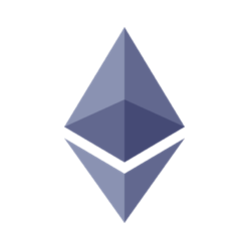
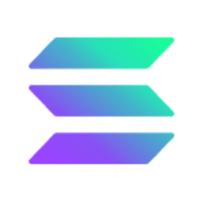
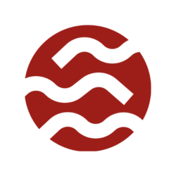
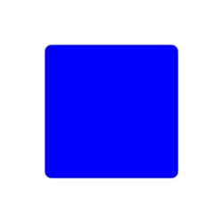
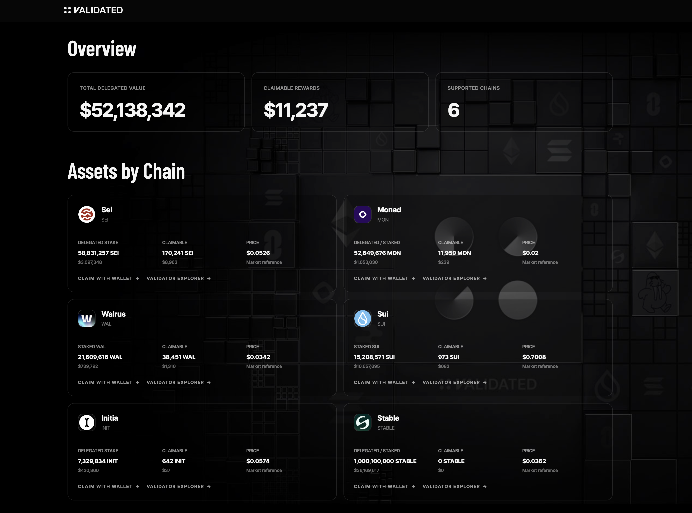

“Validated for
Confident Decisions”
Validator as a Prepared & Trusted Partner for builders & institutions.
Validators form the backbone of every protocol, providing the foundational layer where new value is first generated. FP Validated delivers robust, institutional-grade infrastructure that enables builders and institutions to scale digital asset networks with confidence.
Live Today
Capacity is intentionally distributed across independent providers, eliminating reliance on any single vendor as a potential point of failure.
Comparison reflects architectural posture, not vendor benchmarks. “Common Setup” = a typical single-cluster, single-provider validator deployment.
Who We Are
FP Validated has been operating since 2024, but 2026 marked a major inflection point in its growth. Through the acqui-hire of leadership and core talent from A41, formerly one of Asia’s largest validator companies, FP Validated began scaling its team and infrastructure more aggressively, rapidly building an institution-grade operating foundation backed by veteran SREs with experience operating hundreds of nodes under a SOC 2-compliant environment.
With this foundation, FP Validated is expanding its AUS rapidly and is already working with institutions, VCs, and companies on white-label validator offerings and technical supports. As builders and institutions increasingly seek secure, scalable, and compliance-ready access to staking and blockchain infrastructure, FP Validated is positioned to become one of the most "Prepared and Trusted" validator partners in the global market.
Former Head of Validator Governance at A41.
Former Head of Validator and Tech Lead at A41; Former Cloud Architect Engineer at Samsung SDS Research / Cloud Business Division.
Former SRE at A41; Former Node Operator at Lambda 256.
Former Node Operator at DSRV and Shinlabs.
Former Node Operator at Shinlabs.
Co-founder and Former Head of Research at A41.
Former Researcher at Xangle.
Former Researcher at A41.
What We Operate
Every network runs on a single Kubernetes-based, institution-grade operating model, covering Cosmos-SDK chains, Sui and Walrus, Canton, Ethereum and Solana, and ten mainnet EVM/RPC networks, with all workloads reconciled by Argo CD.

Ethereum mainnet Ethereum testnet
Solana testnet
Sei mainnet
Base TempoDelegating stake means handing over signing authority and slashing risk. Most failures can be recovered from; double-signing or key compromise cannot. Our entire operator architecture is built around one principle: safety before availability.
Control / Workload
A hardened management plane governs identity, secrets, and policy, while chains run on a separate workload plane. Even if the management plane goes down, it can never restart a validator.
Key Safety
Threshold signing, keys kept outside Kubernetes Secrets, and no signer failover triggered by alerts. Any signer-state change is treated as a SEV-1 procedure, not routine operations.
Observability
Raw, high-cardinality detail stays at the edge, while low-cardinality summaries flow to the center. Alerts explain what is happening; they never execute dangerous actions on their own.
Compliance
GitOps desired state, tiered RBAC, and audit evidence are designed for SOC 2 and ISO 27001 from the first commit — verifiable, not merely promised.
One Clean Seam
An Azure-managed control plane governs an external multi-provider workload cluster using diff-only sync with pruning disabled. Across the boundary, only two flows are permitted — and nothing else.
Safety First
Signing keys are secured in cloud KMS/HSM, sealed by HashiCorp Vault, and accessed exclusively through a Kubernetes-native key management layer with short-lived workload identities. The raw key material is never written to a pod or committed to a Git repository.
The Raw Key Never Leaves The Vault
Sealed, Not Stored
No Single Machine Holds A Usable Key
Key Access Is Bounded & Audited
Raw at the Edge,
Summary at the Center
High-cardinality detailed data remains close to the workload, while only low-cardinality fp:* summary data is sent to the central layer. This keeps costs low and is designed to support compliance evidence.
Explainable & Reversible
Every change is assessed based on its blast radius. The workload cluster operates in diff-only mode with pruning turned off, so any drift is reviewed explicitly instead of being automatically reconciled.
From Docs to Signer/Key
Join ≠ Activate
We Halt When Unsure
Safety First, Always
Value We Secure

*Note: On Ethereum, we actively participate in Lido's CSM and IDVTC modules and are preparing non-custodial white-label staking solutions through stVaults. Through these initiatives, we aim to provide institutions and ecosystem partners with secure, scalable, and battle-tested staking infrastructure.
Validator Node Performance
Public explorers and dashboards across every network we operate
Our in-house operations tool monitors upgrade readiness, live resources, and logs, forming the backbone of our safety-first approach to change management.
What's Next
Multi-Provider Platform
Two-plane architecture in production: validators running across five providers, ten mainnet RPC endpoints, and threshold signing live on Cosmos-SDK chains.
Compliance Attestation
SOC 2 / ISO 27001 evidence packets, monthly access reviews, and continuous Azure inventory are being matured into formal audit readiness.
Region & Provider Expansion
Expand into additional independent regions and bare-metal providers, with dedicated per-chain capacity sets and tighter private-access controls.
SOC 2 Type II Certification
Complete an independent SOC 2 Type II audit on top of ISO 27001-aligned controls, providing formal assurance for institutional clients.